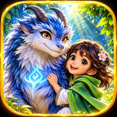

Ragantara Studio
Form interaktif untuk menyusun prompt video Ragantara yang konsisten. Isi cerita, pilih opsi, lalu tekan Generate Prompt.
1. Detail video
Prompt akan merangkai cerita ini bersama identitas karakter, visual, kamera, durasi, dan negative prompt.
2. Prompt video hasil generate
Identitas karakter tetap (Ragantara V2)
Ragantara adalah makhluk fantasi perpaduan naga dan serigala berkaki empat. Kepala naga dengan moncong tegas; tepat dua tanduk utama panjang melengkung ke belakang; bulu hitam arang tebal dan runcing di kepala, leher, bahu, dan punggung; mata tajam dan bijaksana; tubuh atletis; empat kaki kuat bercakar; ekor panjang berbulu dengan ujung spiral. Pertahankan desain, proporsi, warna, dan bentuknya sepanjang video. Gunakan gambar referensi Ragantara V2 pada generator video yang Anda pakai.